Префектура Тоттори · Ядзу · отель
OOE VALLEY STAY: отель в бывшей сельской школе среди гор Тоттори
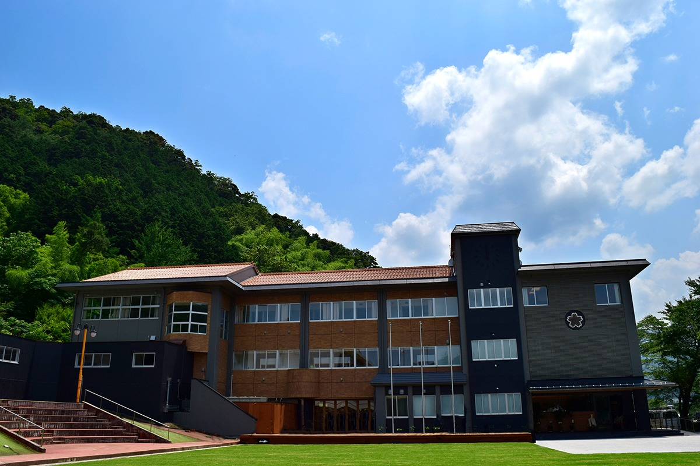
Когда в горном городке Ядзу закрыли начальную школу, её здание не стали сносить. Теперь здесь отель, где вместо телевизора в номере слушают птиц и оленей, а вечером смотрят на звёзды.
Отель
Школа, в которой остаются ночевать
Ядзу находится в префектуре Тоттори, самой малонаселённой в Японии, примерно в 20 минутах на машине от города Тоттори. Вокруг лесистые горы и чистая река, и в этой долине работает курорт «Оэ-но сато». На его территории стояла начальная школа, которую закрыли, и именно её превратили в отель OOE VALLEY STAY.
Сюда приезжают за тем, что можно получить только на природе Тоттори: глэмпингом под звёздами, вечерами у костра, а ещё за едой из местных даров моря и гор.
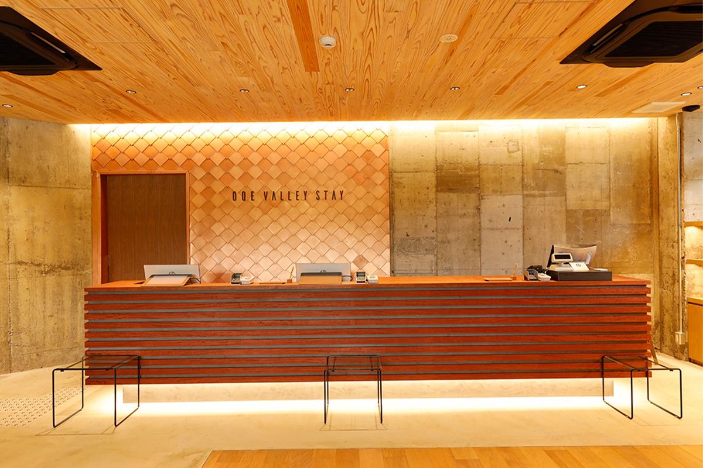
Отель задуман как место, где время течёт медленно. Телевизоров в номерах нет: вечером смотрят на звёздное небо, а утром слышат с гор голоса птиц и крики оленей. Кроме полулюксов и стандартных номеров есть общие комнаты для тех, кто хочет остановиться попроще. Такой отель удобен и для тех, кто приезжает поработать на несколько недель.
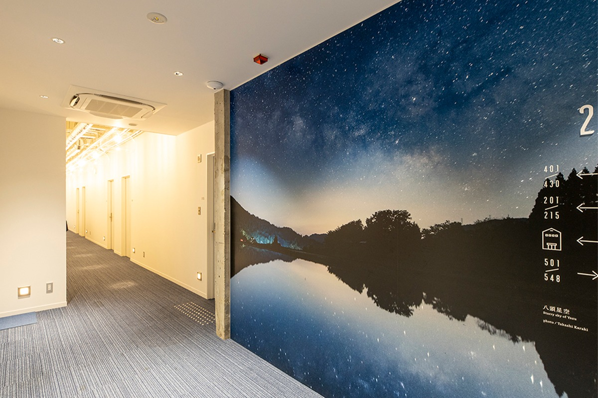
Номера
От простого твина до полулюкса
Стандартный твин
Недорогой, но продуманный и уютный номер. Кровати с матрасами американской фирмы «Симмонс», пол из массива дуба. Можно выбрать номер с собственным балконом или с деревянным подиумом в японском духе. Площадь 21–22 квадратных метра, до трёх гостей, две кровати шириной 120 сантиметров, ванна и душ. В 2021 году ночь с завтраком для двоих стоила от 9240 иен.
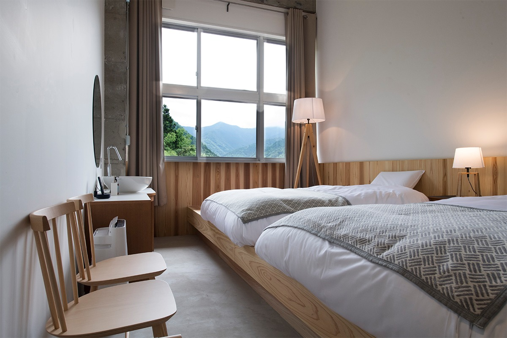
Японский номер
Здесь собраны мингэй, простые красивые вещи, сделанные руками мастеров Тоттори, а также дерево, бумага васи и лён. В таком номере спокойно, как в старом японском доме. Ванна сделана из японского кипариса хиноки, и отдыхать здесь удобно даже с маленькими детьми. Есть два варианта: с деревянной верандой и с котацу, столом над углублением в полу. Площадь 25–26 квадратных метров, до трёх гостей, две односпальные кровати. В 2021 году ночь с завтраком для двоих стоила от 14 740 иен.
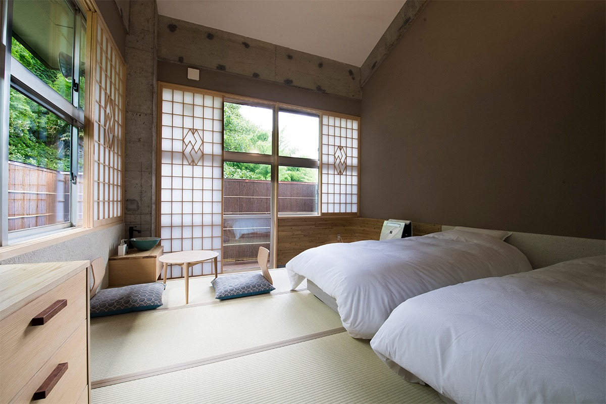
Номер без барьеров
Номер рассчитан на гостей с инвалидной коляской и родителей с детской коляской: автоматическая дверь шириной 90 сантиметров, поручни в туалете и ванной, широкие проходы. Потолок выше четырёх метров, поэтому в номере много воздуха, а с балкона видна природа долины. Площадь 31 квадратный метр, до трёх гостей, две кровати, диван, эмалированная ванна. В 2021 году ночь с завтраком для двоих стоила от 14 740 иен.
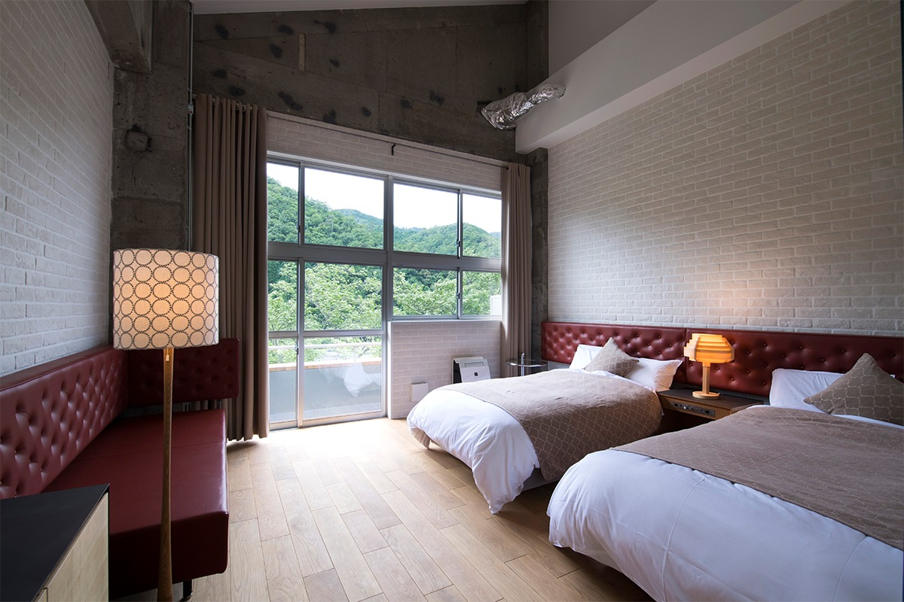
Полулюкс
Главный номер отеля площадью 50 квадратных метров. Спальню отделяет резная решётка кумико, традиционная японская работа по дереву, а в гостиной стоят дизайнерские диваны. Откроешь окно, и в комнату входит лесной воздух. Такой номер выбирают для годовщин и других особых случаев. В 2021 году ночь с завтраком для двоих стоила 20 900 иен.
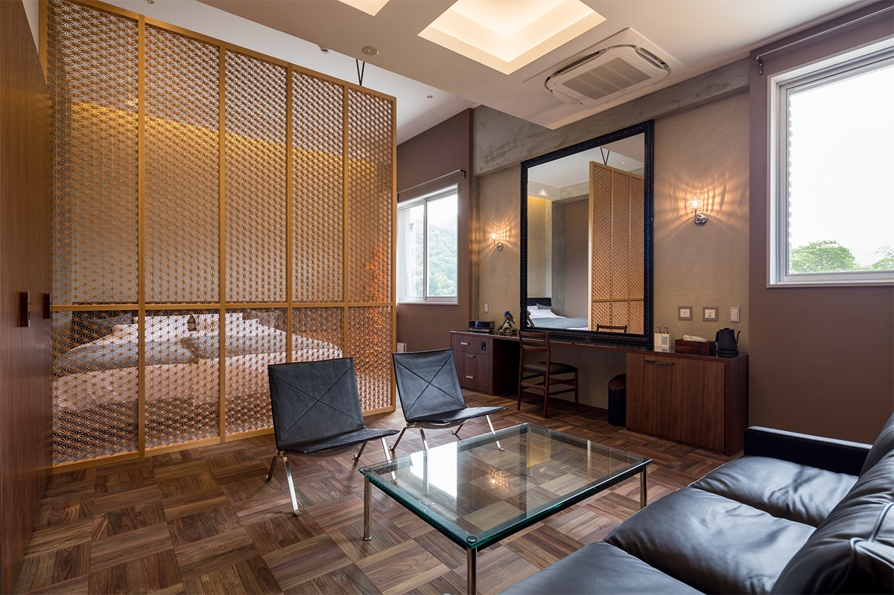
Кроме этих номеров в отеле есть общие комнаты, стандартные номера с двуспальной кроватью, улучшенные номера и номера категории «делюкс», где японский стиль соединён с европейским.
Ресторан
Ужин у очага в «Ирори»
Ресторан называется «Ирори», так по-японски называют открытый очаг в полу старого дома. Здесь готовят из того, что дают округа: горные травы и грибы, рыбу из чистых рек. Сакэ, крафтовое пиво и вино тоже отобраны только из префектуры Тоттори. Вокруг очага в деревне всегда собирались, чтобы поговорить, и здесь можно на время отложить дела и представить, как жили в этих горах раньше.
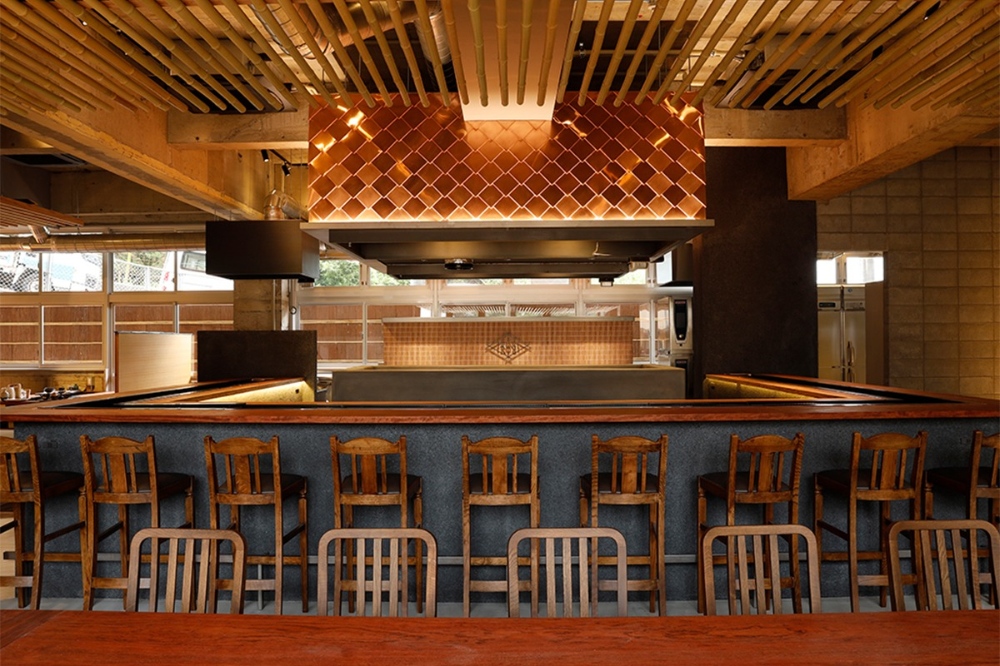
Вечером подают только ужин из нескольких блюд, и только по предварительной записи. Говядину вагю из Тоттори гости обжаривают сами на углях до нужной степени, а местную курицу «Сикано дзидори» жарит повар. Есть три варианта ужина, от закусок до десерта: в 2021 году они стоили 4200, 5500 и 8800 иен без налога.
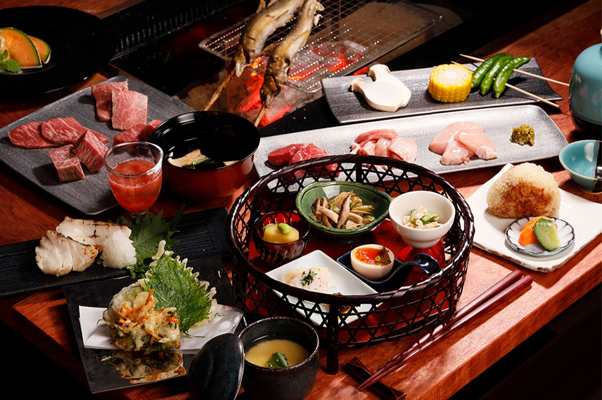
Днём в ресторане можно заказать «мабуси» из вагю Тоттори: ломтики мяса на рисе, сваренном в глиняном горшке. Сначала его едят просто так, чтобы почувствовать, как тает говядина, а потом заливают фирменным бульоном. В 2021 году это блюдо стоило 2200 иен без налога.
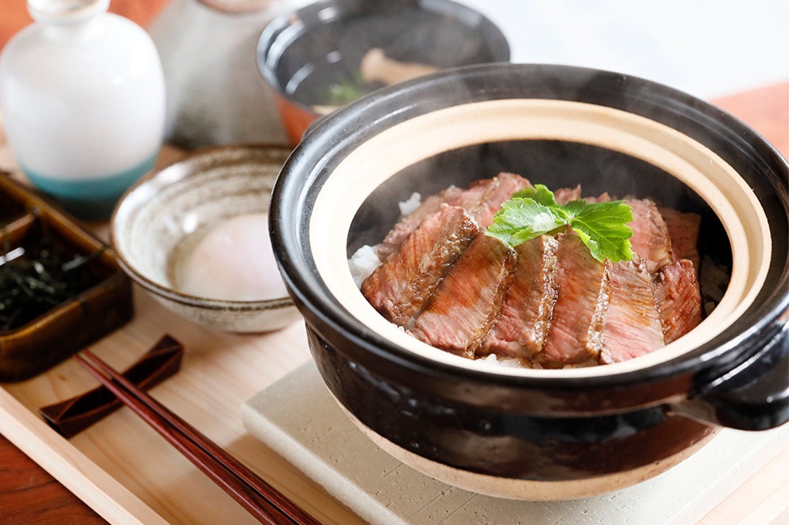
Бар
Сакэ, которого нет за пределами Тоттори
В японском баре собрано сакэ более чем десяти пивоварен префектуры: дзюммай, дзюммай гиндзё и дзюммай дайгиндзё. Есть марки, которые почти не продаются за пределами Тоттори, так что можно устроить дегустацию и сравнить. Ещё здесь наливают местное крафтовое пиво с мелкой пеной, вина разных виноделен Тоттори, сётю и сливовое вино умэсю. Пить можно за стойкой, а можно выйти на улицу и смотреть на звёзды.
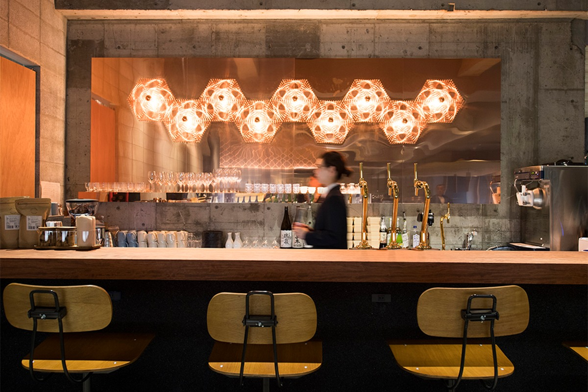
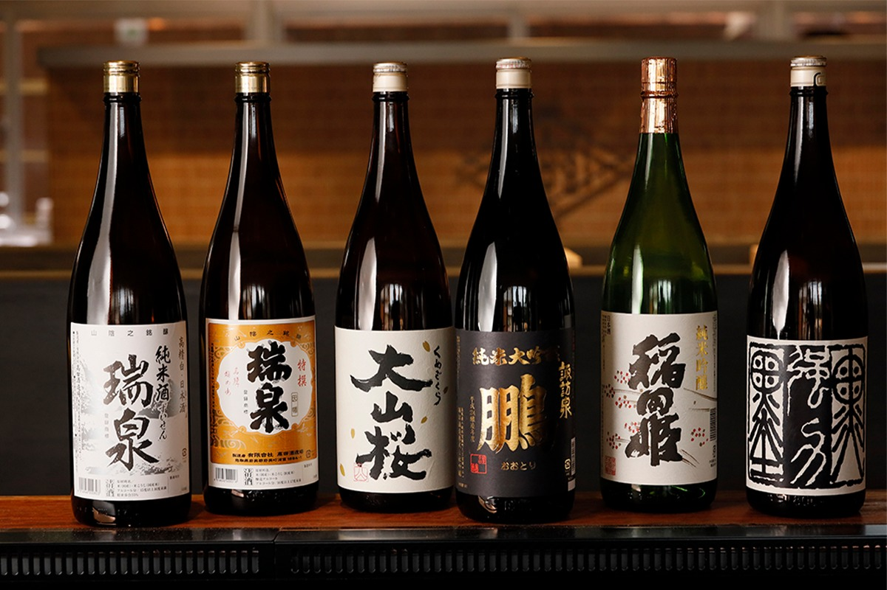
Чем заняться
Звёзды, птицы и полёт над дюнами
Префектуру Тоттори называют ещё «префектурой звёзд». Небо здесь ночью полно звёзд, а по утрам в деревенской тишине поют птицы. Отель предлагает наблюдать за звёздами и за птицами. Гостям бинокль дают бесплатно, остальным в 2021 году его прокат стоил 550 иен.
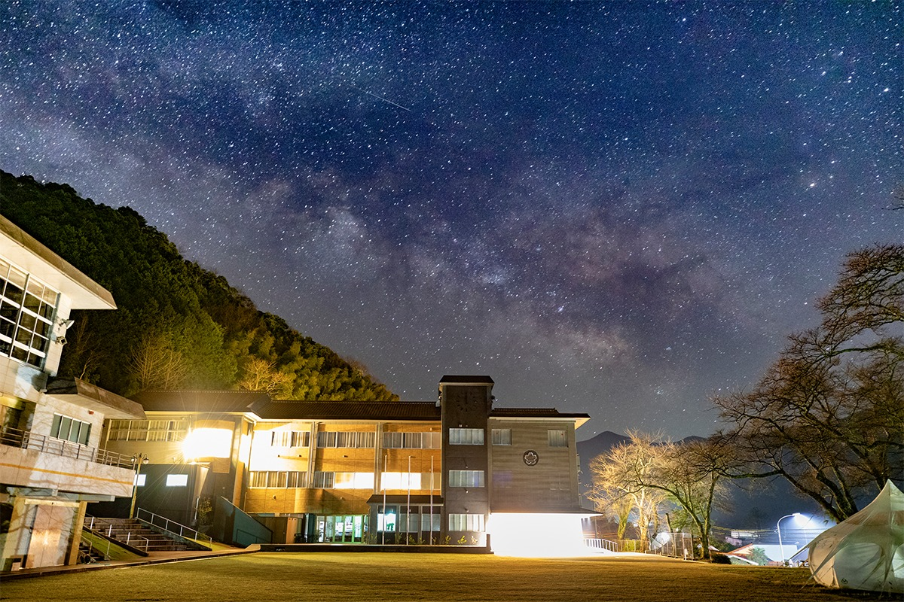
Через отель можно записаться и на полёт на параплане над дюнами Тоттори, главной достопримечательностью префектуры. Опытные инструкторы всё объясняют, поэтому летают даже новички и дети. Запись идёт через местное туристическое агентство. Есть и другие занятия: можно самим сделать лапшу удон, подняться по горной реке в ущелье Митани или пройти на морском каяке вдоль побережья Урадомэ.
OOE VALLEY STAY
- Адрес
- префектура Тоттори, уезд Ядзу, Ядзу, Симоно, 331
- Телефон
- +81 570-008-558
- Цены / Вход
- ночь с завтраком: общая комната от 3600 иен, стандартный твин от 8400 иен (без налога)
- Номера
- 34
- Часы работы
- ресторан «Ирори»: обед 11:30–14:00, ужин 18:00–22:00 (только по записи), бар до 21:30
- Сайт
- ooevalley.jp
Фото: Такаси Караки.